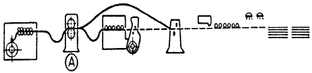
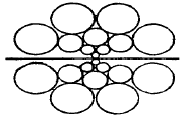
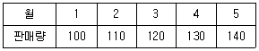
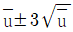
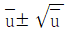
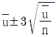
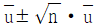

압연기능장 (2002-07-21 기출문제)
1과목: 임의 구분
1. 코크스로 가스의 연소성분과 발열량은?
- H2, CH4, CO - 4500 Kcal/Nm3
- CO, H2 - 7450 Kcal/Nm3
- CO, CmHn, H2 - 9000 Kcal/Nm3
- CmHn - 10000 Kcal/Nm3
(정답률: 87%)

2. 연료의 발열량에 관한 등식으로 맞는 것은?
- 고위 발열량 = 저위 발열량
- 저위 발열량 = 물의 증발열
- 고위 발열량 = 저위 발열량 + 물의 증발열
- 고위 발열량 = 저위 발열량 - 물의 증발열
(정답률: 86%)
3. 윤활 작용을 하는 가장 중요한 목적은?
- 마찰열 생성
- 기름막 생성
- 산화막 형성
- 공기막 형성
(정답률: 93%)
4. 윤활제 중 광유의 설명이 옳은 것은?
- 석유계 주성분은 탄화 수소계이다.
- 에스테르가 주성분이다.
- 저점도 광유는 물과의 에멜션화성이 나쁘다.
- 기계적 교반과 세척공정이 반드시 필요하다.
(정답률: 72%)
5. 유압회로중의 제어계에서 응답성, 안정성과 밀접한 관계가 있는 유압유의 체적탄성계수는?
- 커야 한다.
- 작아야 한다.
- 일정하여야 한다.
- 무관 하다.
(정답률: 66%)
6. 분괴 압연기에서 압연된 장방형(長方形)의 단면을 가지며 두께가 50∼150mm, 폭 600∼1500mm정도의 강편은?
- 블루움(Bloom)
- 빌렛(Billet)
- 스래브(Slab)
- 로드(Rod)
(정답률: 84%)
7. 분괴 압연의 제품이 아닌 것은?
- Slab
- Seamless Tube
- Bloom
- Billet
(정답률: 92%)
8. 공형의 구성요건 중 틀린 것은?
- 실수율이 높을 것
- 재료의 흐름오차가 클 것
- 국부 마멸을 일으키지 않을 것
- 롤 스페이스를 만족시킬 것
(정답률: 85%)
9. 열연강판의 결함 중 표면 대형 개재물이나 Al2O3에 의한 Sliver결함은?
- Scab
- Skin lamination
- Pipe
- Pinchers
(정답률: 78%)
10. 냉간압연 강판의 특징 중 틀린 것은?
- 표면결함이 적다.
- 판두께의 정밀도가 높다.
- 도금을 하면 내식성을 줄 수 있다.
- 박강판(薄鋼板)의 제조가 불가능하다.
(정답률: 95%)
11. 열간압연에서 기계적 성질이 좋은 강판을 얻기 위하여 콘트롤 롤링(control rolling)을 한다. 콘트롤 롤링에 가장 적합한 온도(℃)는?
- 1300∼1400
- 1100∼1200
- 800∼900
- 500∼600
(정답률: 69%)
12. 열간 압연 후 냉각시 고려 되어야할 3요소가 아닌 것은?
- 냉각온도
- 냉각치수
- 냉각속도
- 균일냉각
(정답률: 89%)
13. 열괴(heat ingot)의 설명이 가장 옳은 것은?
- 출강 후 8 시간 이내의 강괴
- 출강 후 12 시간 이내의 강괴
- 출강 후 8 시간 이상 12시간 이내의 강괴
- 출강 후 24 시간 이내의 강괴
(정답률: 88%)
14. 치수정밀도가 극히 우수한 박판제조에 사용되는 압연기는?
- 4단 압연기
- 유니버셜압연기
- 센지미어식압연기
- 2단 연속 압연기
(정답률: 86%)
15. 가열로에 사용되는 버너(burner)의 구비조건이 아닌 것은?
- 연소량 조절 범위가 클 것
- 화염의 상태가 안정될 것
- 노즐의 공(孔)이 클 것
- 보수, 운전이 간편할 것
(정답률: 90%)
16. 직경이 20cm의 환봉을 압출하여 직경12cm의 환봉으로 만들었을 때 압출비는?
- 0.5
- 0.18
- 0.25
- 0.36
(정답률: 61%)
17. 황동에서 불순물의 영향으로 잘못 설명된 것은?
- Pb는 황동 중에 용해하여 연성을 증가시킨다.
- Sb는 결정립을 조대화시키며 상온취성을 조장시킨다.
- Bi는 고온취성을 증대시킨다.
- Cd는 1%이상이면 강도, 연성을 감소시킨다.
(정답률: 65%)
18. 아공석강에서 강도와 경도가 증가하는 가장 큰 이유는?
- S 량 증가
- C 량 감소
- C 량 증가
- Si량 감소
(정답률: 86%)
19. 전동 A.G.C와 유압 A.G.C를 비교할 때 유압 A.G.C의 특징이 아닌 것은?(A.G.C : Automatic Gauge Control)
- 정도(精度)가 높다.
- 최대부하가 높다.
- 감지가 빠르다.
- 설비비가 싸다.
(정답률: 82%)
20. -200℃까지의 극저온하에서 사용할 수 있는 강종으로 INCO사가 개발한 것이며 인장강도가 70-84 Kgf/mm2 인 저온용 특수강은?
- 9% Ni강
- 고장력강
- 강인강
- 고속도강
(정답률: 93%)
2과목: 임의 구분
21. 강의 항복강도는 입도의 크기와 어떤 관계가 있는가?
- 입도가 작을수록 증가한다.
- 입도가 클수록 증가한다.
- 입도와 관계 없다.
- 항상 일정하다.
(정답률: 71%)
22. 금속재료를 냉간가공하면 기계적성질은 어떻게 변하는가?
- 강도와 항복점 증가, 연신율과 인성 감소
- 투자율과 전기전도도 증가, 연신율과 항자력 감소
- 전기저항과 연신율 증가, 인성과 항복점 감소
- 인성과 이방성 증가, 가공경화와 항복점 감소
(정답률: 80%)
23. 작업장에서 가장 높은 비율을 차지하는 인적 사고의 원인은?
- 인간의 불안전한 행동
- 시설장비의 결함
- 작업환경
- 체제상의 결함
(정답률: 93%)
24. 유류화재 발생시 사용할 수 없는 소화기는?
- 주수(注水) 소화기
- ABC 소화기
- CO2 소화기
- 포말소화기
(정답률: 95%)
25. 그림은 호트시어라인 배치도이다. 꿩의 명칭은?

- 업컷트 시어
- 플라잉 시어
- 사이드 리머
- 언코일러
(정답률: 61%)
26. 다음 그림은 어떤 압연기를 나타낸 것인가?

- Cluster Mill
- Sendzimir Mill
- Continuous Mill
- Universal Mill
(정답률: 91%)
27. 균열로 조업시 노상부하는 장입강괴의 밑면적의 합이 유효노상면적에 대하여 어느 정도의 비율을 차지하는 가를 나타내는 것이다. 가장 적절한 노상부하는?
- 5∼10%
- 10∼20%
- 35∼45%
- 50∼55%
(정답률: 70%)
28. 알루미늄 용탕을 회전하고 있는 롤(Roll)의 아랫방향으로 부터 공급하여 롤에 의해서 직접판으로 주조하는 방법은?
- 프로퍼지법(Properzi method)
- 헌터법(Hunter method)
- 분말연속 압연법
- UO 프레스법(UO press method)
(정답률: 81%)
29. 냉간압연작업이 열간압연작업과 비교하여 장점이 아닌 것은?
- 재결정온도 이상에서 작업을 하므로 재질의 균일화가 이루어진다.
- 스케일 부착이 거의 없다.
- 압연재의 표면이 미려하다.
- 결정립의 미세화로 기계적 성질이 우수하다.
(정답률: 92%)
30. 풀림한 그대로의 스트립을 프레스 가공하면 가공도가 비교적 적은 부분의 표면에 어떤 변형이 생기는가?
- 스트레처 스트레인
- 부루 쇼트네스
- 스킬 마크
- 오일 스테이션
(정답률: 90%)
31. 롤의 배치가 2단식으로 사용되지 않는 압연기는?
- 조질압연기
- 분괴압연기
- 클러스터압연기
- 열간조압연기
(정답률: 72%)
32. 판재 압연시 압연재가 롤에 감겨서 아랫쪽으로 처지거나 위쪽으로 감겨 올라가는 것을 방지하기 위해 설치하는 것은?
- Delivery guide
- Side guide
- Repeter
- Stripper
(정답률: 78%)
33. 잔류응력은 외력을 제거한 후 금속내부에 잔류하고 있는 응력으로서 압축응력과 인장응력으로 구분된다. 냉연에서 조질압연 후에 남는 잔류응력은?
- 표면에 인장응력, 중심부에 압축응력
- 표면에 압축응력, 중심부에 인장응력
- 표면과 중심부 모두 인장응력
- 표면과 중심부 모두 압축응력
(정답률: 89%)
34. 후판 압연시 피쉬테일이 생기는 가장 큰 이유는?
- 판표면의 선진
- 판내부 중심부의 선진
- 롤의 표면불량
- 압연방법의 부적합
(정답률: 83%)
35. 압연의 전(前)과정인 제강시에 탈황반응을 하는 원소는?
- C
- Mn
- Si
- P
(정답률: 73%)
36. 두께 7.1∼17 mm 정도의 얇은 판상 강편은?
- Billet
- Beam blank
- Rod
- Tin bar
(정답률: 83%)
37. 대형에 속하는 가열로로써 예열실, 가열실, 균열실로 구성된 가열로는?
- 상부가열식 연속가열로
- 3대식 연속가열로
- Batch형 가열로
- 2대식 연속가열로
(정답률: 87%)
38. Roll and roll(혹은 roll the roll)현상이 나타나게 하는 것은?
- 유막강도가 작을 경우
- 열전도도가 나쁠 경우
- 비열이 작을 경우
- 마찰계수가 클 경우
(정답률: 66%)
39. 냉연 박판의 압연 공정순서가 옳게 나열된 것은?
- 산세→ 냉간압연→ 표면청정→ 풀림→ 조질압연→ 전단리코일
- 냉간압연→ 산세→ 표면청정→ 풀림→ 조질압연→ 전단리코일
- 표면청정→ 산세→ 냉간압연→ 조질압연→ 풀림→ 전단리코일
- 조질압연→ 냉간압연→ 산세→ 표면청정→ 풀림→ 전단리코일
(정답률: 92%)
40. 압연용 잉곳트를 생산하는 제강법은?
- 소결법
- 전로법
- 도가니로법
- 용광로법
(정답률: 88%)
3과목: 임의 구분
41. 워킹빔식 가열로의 과정으로 맞는 것은?
- 후퇴→ 상승→ 전진→ 하강
- 하강→ 상승→ 전진→ 후퇴
- 상승→ 전진→ 하강→ 후퇴
- 전진→ 상승→ 하강→ 후퇴
(정답률: 93%)
42. 압연재가 롤 사이로 들어가면 압연기의 구조부분의 틈 때문에 롤 간극의 증가가 생기는 것은?(오류 신고가 접수된 문제입니다. 반드시 정답과 해설을 확인하시기 바랍니다.)
- 증폭량
- 롤 플레이팅
- 스트라이트
- 롤 스프링
(정답률: 87%)
43. 연강, 반경강의 강편을 띠 모양으로 길게 압연하여 코일로 감은 것으로 용접강관이나 경량형강을 만드는 것은?
- Billet
- Ingot
- Hoop
- Bloom
(정답률: 85%)
44. 열전도율이 좋고 비중이 약 8.9 인 금속은?
- 철
- 주석
- 구리
- 납
(정답률: 92%)
45. 산업안전 보건법에서는 소음이 장시간 노출되면 영구난청이 되는 경우가 있다. 소음의 단위는?
- Hz
- UHP
- dB
- ppm
(정답률: 90%)
46. 압연작업에서 접촉부의 단면 중 중립점에서 재료의 속도를 설명한 것으로 옳은 것은?
- 롤 속도보다 빠르다.
- 롤 속도보다 느리다.
- 롤 속도와 같다.
- 후진 및 선진속도와 똑 같다.
(정답률: 83%)
47. 직경 500mm의 롤 을 사용하여 폭 500mm, 두께 20mm의 연강 후판을 폭 520mm,두께 15mm로 압연할 경우 증폭량(mm)은?
- 20
- 25
- 30
- 35
(정답률: 72%)
48. 후판 10mm의 판을 8mm로 압연할 때 압연하중(kgf)은? (단, 롤 반경 R은 250mm, 판폭 b는 1000mm, 평균압연압력 Pm은 20kgf/mm2이며, 롤의 편평에 대하여는 무시함)
- 약 185700
- 약 267300
- 약 354500
- 약 447200
(정답률: 65%)
49. 두께 150 mm 인 압연소재를 20%의 압하를 가하여 압연기 압축에서 소재가 2 m/sec 로 이송되었을 때 압연기 출측에서의 소재 이송 속도(m/sec)는?
- 2.0
- 2.5
- 2.9
- 3.5
(정답률: 62%)
50. Feed back control system의 구성에서 제어장치에 속하지 않는 것은?
- 설정부
- 제어대상
- 조작부
- 검출부
(정답률: 79%)
51. 수직왕복운동을 하는 유압실린더에서 자중에 의한 낙하속도의 변화를 방지하는 압력제어 밸브는?
- 압력 릴리프 밸브
- 카운터 밸런스 밸브
- 시퀜스 밸브
- 감압 밸브
(정답률: 76%)
52. 유압펌프의 종류가 아닌 것은?
- 기어펌프
- 베인펌프
- 피스톤펌프
- 분사펌프
(정답률: 84%)
53. 자동 제어계의 일반적인 특성이 아닌 것은?
- 생산기구가 간단해진다.
- 노동조건을 향상시킬 수 있다.
- 생산량을 증대시킬 수 있다.
- 원료 및 연료를 절감시킨다.
(정답률: 82%)
54. 다음 중 출력 장치가 아닌 것은?
- 디지 타이저
- 프린터
- 플로터
- 모니터
(정답률: 82%)
55. 공급자에 대한 보호와 구입자에 대한 보증의 정도를 규정해 두고 공급자의 요구와 구입자의 요구 양쪽을 만족하도록 하는 샘플링 검사방식은?
- 규준형 샘플링 검사
- 조정형 샘플링 검사
- 선별형 샘플링 검사
- 연속생산형 샘플링 검사
(정답률: 80%)
56. 표는 어느 회사의 월별 판매실적을 나타낸 것이다. 5개월 이동평균법으로 6월의 수요를 예측하면?

- 150
- 140
- 130
- 120
(정답률: 70%)
57. u 관리도의 공식으로 가장 올바른 것은?




(정답률: 87%)
58. 도수분포표를 만드는 목적이 아닌 것은?
- 데이터의 흩어진 모양을 알고 싶을 때
- 많은 데이터로부터 평균치와 표준편차를 구할 때
- 원 데이터를 규격과 대조하고 싶을 때
- 결과나 문제점에 대한 계통적 특성치를 구할 때
(정답률: 56%)
59. 설비의 구식화에 의한 열화는?
- 상대적 열화
- 경제적 열화
- 기술적 열화
- 절대적 열화
(정답률: 78%)
60. 모든작업을 기본동작으로 분해하고 각 기본동작에 대하여 성질과 조건에 따라 정해놓은 시간치를 적용하여 정미시간을 산정하는 방법은?
- PTS법
- WS법
- 스톱워치법
- 실적기록법
(정답률: 77%)